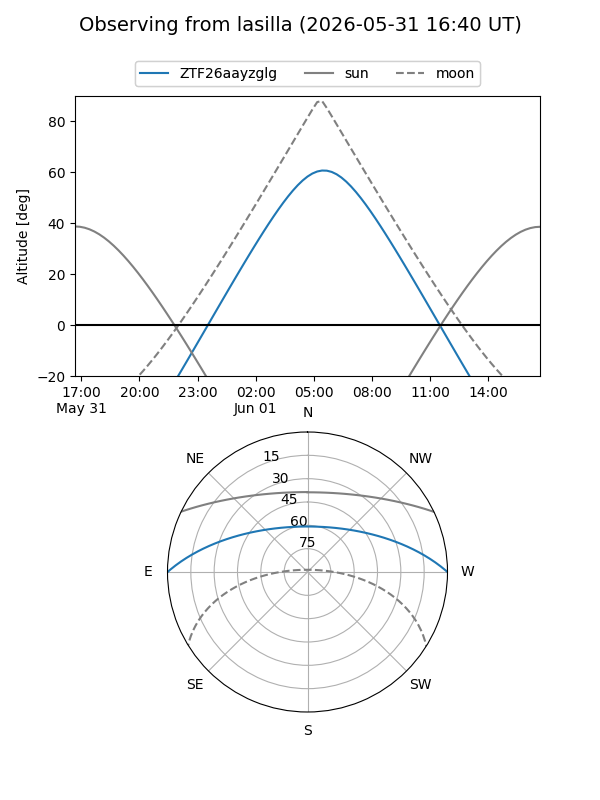
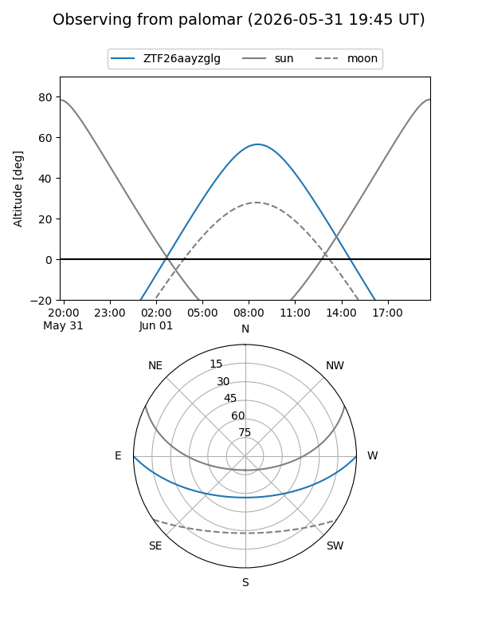

ZTF26aayzglg
Target ZTF26aayzglg at 2026-05-31 11:47
Aliases and brokers:
lsst-FINK: link
lsst-Lasair: link
lsst-ALeRCE: link
ztf-FINK: link
ztf-Lasair: link
ztf-ALeRCE: link
alt names
ZTF26aayzglg (ztf,fink_ztf)
Coordinates:
equatorial (ra, dec) = 261.4123,+0.01744
equatorial (HMS+DMS) = 17:25:38.96,+00:01:02.77
galactic (l, b) = (22.7923,+18.99928)
Flags:
Photometry:
last ztfg=18.44
1 ztfg detections
Lightcurve
Visibility


Additional plots